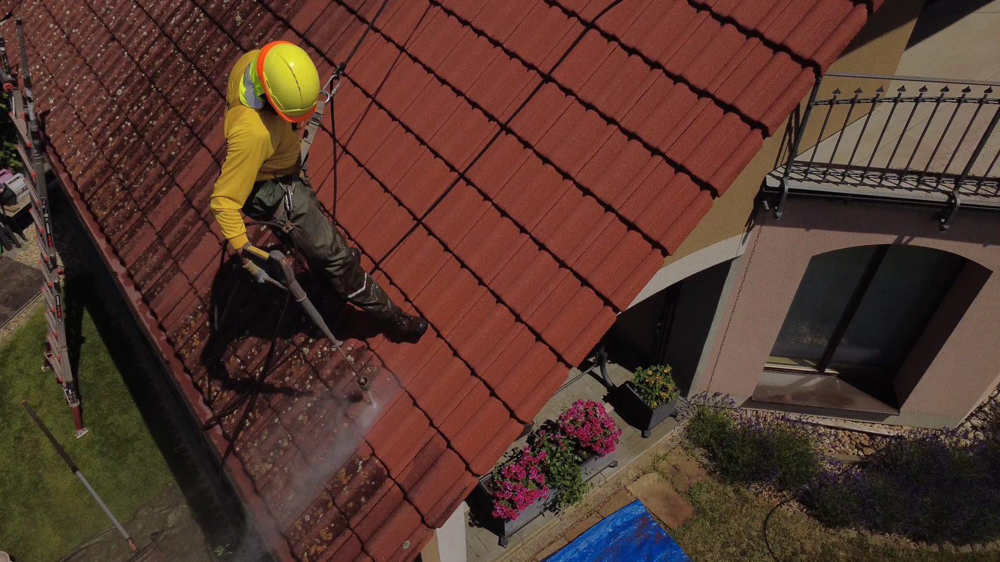
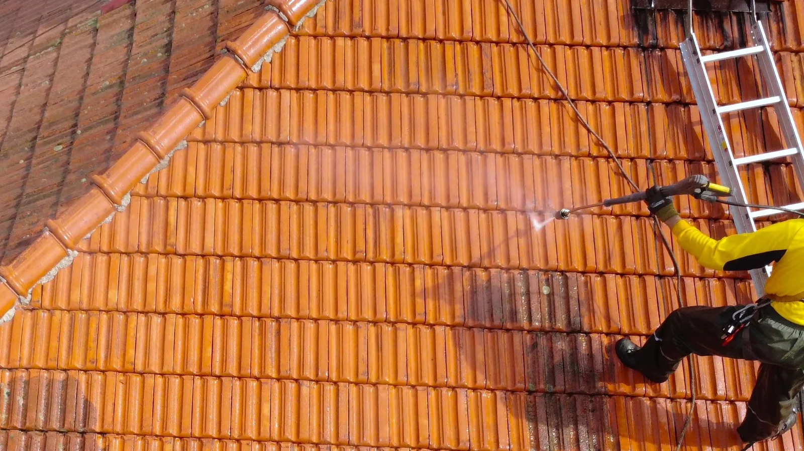
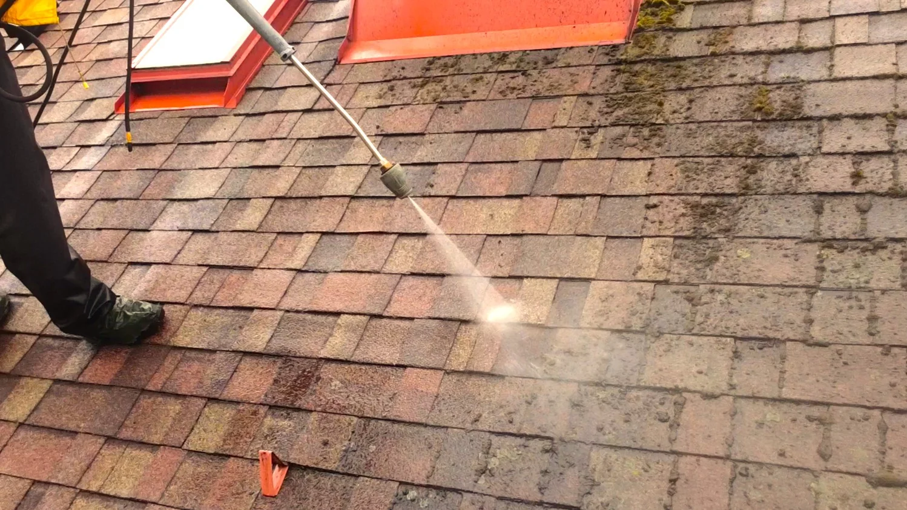

Čistší vzhled střechy
Odstraníme viditelný mech, řasy, lišejníky a usazené nečistoty podle stavu a typu krytiny.
Biocidní ošetření, čištění vapkou a impregnace tvoří jeden navazující technologický postup.

Postaráme se o celý postup od prvního posouzení až po závěrečnou ochranu krytiny.
Odstraníme viditelný mech, řasy, lišejníky a usazené nečistoty podle stavu a typu krytiny.
Biocidní ošetření, čištění tlakovou vodou a závěrečná impregnace v jednom balíčku.
Při bezplatné prohlídce střechu prohlédneme a zaměříme dronem, abychom upřesnili rozsah prací.
Dodržujeme tento postup: nejprve biocid, poté čištění a nakonec impregnace.
Nejprve aplikujeme prémiový bezchlorový biocidní přípravek Impaguard. Ošetření je zaměřené na biologické nečistoty, jako jsou mechy, řasy a lišejníky. Přípravky používáme podle doporučení výrobce.
Po biocidním ošetření přichází na řadu tlakové čištění. Z povrchu krytiny odstraňujeme uvolněné nečistoty a usazeniny. Postup přizpůsobujeme konkrétní střeše a jejímu stavu.
Na závěr aplikujeme ochrannou impregnaci. Pomáhá omezovat pronikání vlhkosti a zpomalovat opětovné znečištění. Orientační doba ochrany je 6 až 8 let podle typu a stavu krytiny a podmínek vystavení.
Důležité: Nepřeskakujeme pořadí jednotlivých kroků. Konkrétní způsob práce vždy volíme podle materiálu, stavu a přístupnosti střechy.
Pracujeme s běžnými typy střešních krytin. Před realizací vždy posoudíme jejich stav a vhodnost zvoleného postupu.

Čistíme běžné betonové tašky i varianty s povrchovým posypem, včetně takzvané alpské tašky. Před čištěním posoudíme stav povrchu a zvolíme vhodný postup pro konkrétní krytinu.

U pálené krytiny přihlížíme k jejímu stáří, povrchové úpravě a technickému stavu. Čištění přizpůsobíme konkrétní střeše a míře znečištění.

U asfaltového šindele pečlivě posuzujeme jeho stav a vhodnost čištění. Zvolený postup vždy přizpůsobíme materiálu a jeho technickému stavu.
Používáme výhradně prémiovou bezchlorovou chemii českého výrobce Impaguard. Máme certifikát pro její používání a přípravky aplikujeme podle doporučeného postupu výrobce.
Závěrečná impregnace je součástí kompletního balíčku. Vytváří ochrannou vrstvu, která pomáhá omezovat působení vlhkosti a zpomalovat opětovné usazování nečistot.
Skutečná délka ochrany se liší podle typu a stavu krytiny, okolního prostředí a podmínek, kterým je střecha vystavena.
Práce na střeše vyžaduje zkušenost, přípravu a respekt ke konkrétnímu objektu. Před realizací zohledníme typ a stav krytiny, přístup ke střeše i okolí domu. Podle toho navrhneme vhodný a bezpečný pracovní postup.

Biocidní ošetření, čištění vapkou a impregnace tvoří jeden navazující technologický postup.
Ošetření proti mechu, řasám a dalším biologickým nečistotám.
Odstranění uvolněných nečistot z povrchu krytiny.
Závěrečná ochrana střešní krytiny.
Biocidní ošetření, čištění vapkou a impregnace tvoří jeden navazující technologický postup.
Vše si nejprve vysvětlíme a cenu i termín potvrdíme před zahájením prací.
Podle informací v poptávce vám připravíme orientační cenovou nabídku a ozveme se s dalším postupem.
Přijedeme, střechu prohlédneme a zaměříme dronem. Upřesníme rozsah, cenu a společně domluvíme termín realizace.
V dohodnutém termínu provedeme domluvené práce bezpečně a podle vhodného postupu pro vaši krytinu.
Hlavní oblastí naší působnosti je Zlínsko a Vysočina. Po předchozí dohodě přijedeme také do dalších míst po celé České republice.
Odpovědi na nejčastější dotazy k ceně, postupu a ochraně střešní krytiny.
Biocidní ošetření, čištění vapkou a impregnace tvoří jeden navazující technologický postup.
Orientační doba ochrany je 6 až 8 let. Skutečná délka závisí na typu a stavu střešní krytiny a na podmínkách, kterým je střecha vystavena.
Používáme výhradně prémiovou bezchlorovou chemii českého výrobce Impaguard a máme certifikát pro její používání. Přípravky aplikujeme podle doporučeného postupu výrobce.
Pracujeme s betonovými střešními taškami včetně variant s povrchovým posypem, jako je takzvaná alpská taška, dále s pálenými střešními taškami a asfaltovým šindelem. Vhodný postup vždy posoudíme podle konkrétní krytiny a jejího stavu.
Termín bezplatné prohlídky a zaměření střechy dronem domluvíme předem. Při domluvě vám upřesníme, zda je vaše přítomnost na místě potřeba s ohledem na konkrétní objekt a přístup.
Hlavně na Zlínsku a Vysočině. Po předchozí dohodě přijedeme také do dalších míst po celé České republice.
Vedle čištění střech nabízíme renovaci a ochranu betonových a minerálních podlah systémem IG CeramFloor.
Pošlete nám nezávaznou poptávku. Připravíme orientační nabídku a domluvíme bezplatnou prohlídku střechy dronem.